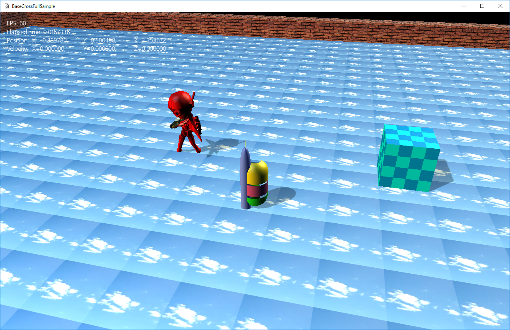

図0308a
プレイヤーはBボタンで棒を振り回すことができます。右のボックス、および左のモデルに振り回した棒が当たると当たった場所からスパークがでます。
bool EnemyBox::IsHitSegmentTriangles(const Vec3& StartPos, const Vec3& EndPos, Vec3& HitPoint) {
auto PtrDraw = GetComponent<BcPNTStaticDraw>();
TRIANGLE tri;
return PtrDraw->HitTestStaticMeshSegmentTriangles(StartPos, EndPos, HitPoint, tri);
}
bool BoneChara::IsHitSegmentTriangles(const Vec3& StartPos, const Vec3& EndPos, Vec3& HitPoint) {
auto PtrDraw = GetComponent<BcPNTBoneModelDraw>();
TRIANGLE tri;
return PtrDraw->HitTestSkinedMeshSegmentTriangles(StartPos, EndPos, HitPoint, tri);
}
void Player::OnUpdate() {
//中略
Vec3 StartPos, EndPos;
GetFightBehavior()->GetSowdStartEndLine(StartPos, EndPos);
auto EnemyPtr = GetStage()->GetSharedGameObject<EnemyBox>(L"EnemyBox");
Vec3 HitPoint;
if (EnemyPtr->IsHitSegmentTriangles(StartPos, EndPos, HitPoint)) {
//スパークの放出
auto PtrSpark = GetStage()->GetSharedGameObject<MultiSpark>(L"MultiSpark");
PtrSpark->InsertSpark(HitPoint);
}
auto BonePtr = GetStage()->GetSharedGameObject<BoneChara>(L"BoneChara");
if (BonePtr->IsHitSegmentTriangles(StartPos, EndPos, HitPoint)) {
//スパークの放出
auto PtrSpark = GetStage()->GetSharedGameObject<MultiSpark>(L"MultiSpark");
PtrSpark->InsertSpark(HitPoint);
}
}